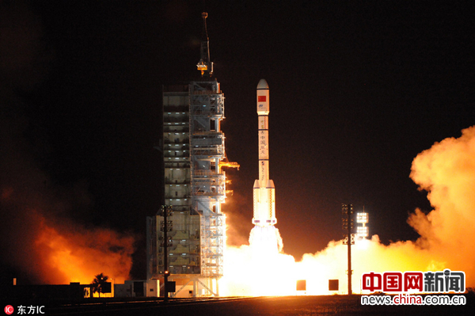

正常盒子
正常盒子与怪异盒子对比
盒子参数：width:200px; height:200px; padding:20px; border:5px;
内部方块参数：width:200px; height:200px;
| 正常盒子 | 怪异盒子 |
|---|---|
|
|
怪异盒子 |
弹性盒子水平分栏
第一个div
第二个div
第三个div
弹性盒子垂直分栏
第一个div
第二个div
第三个div
弹性盒子排序
顺序：第一个div的order为2; 第二个div的order为3; 第三个div的order为1;
第一个div
第二个div
第三个div
Cloumn分栏
 2016年9月15日22时04分，甘肃酒泉，搭载天宫二号空间实验室的长征二号F运载火箭在我国酒泉卫星发射中心成功发射。(图片来源：东方IC) 中国网新闻9月17日讯 据韩联社报道，9月15日，中国在酒泉卫星发射中心用长征二号F T2火箭将天宫二号空间实验室发射升空。这标志着中国航天事业向前迈进了一大步，中国再次在全世界面前展示出“太空强国”的实力。 中国已为建设空间站做出了一系列准备。继2011年首个空间实验室天宫一号上天以来，中国又分别于2012年和2013年成功发射神舟九号和神舟十号飞船。 明年，中国的长征七号运载火箭将带着天舟一号补给货运飞船与天宫二号实现对接。如该项任务顺利完成，中国计划于2018年开始建造首座装备全面的空间站，2022年基本建成。 空间站类似于在太空中的基地，可供航天员逗留和生活。国际空间站由美国、俄罗斯和欧洲航天局等联合建设。国际空间站上主要开展太空环境下人类与物质状态变化的研究。美国国家航空航天局（NASA）的宇航员科特 凯利曾在国际空间站生活340天，以了解其身体变化。尽管如此，国际空间站将于2024年结束使命，因此，在这之后中国有望成为唯一运营空间站的国家。 空间站的意义重大，可为探索火星等遥远行星的飞船提供物资补给，甚至可以组建地面发射不了的体型庞大的宇宙飞船。 当问及完成空间站建设所需技术的问题时，韩国航空宇宙研究院（KARI）月球探测研究团团长崔基赫（音译）表示：“最根本的是要具备载人火箭技术。”而在太空中将多个舱段连接在一起的空间交会对接也是必备技术，崔基赫说，“要将以每秒7到8公里速度并排飞行的宇宙飞船连接在一起，操控速度比子弹快20倍的宇宙飞船往正确的方向飞行，误差要保持在每秒几十公分以内。” 人类在空间站中生活需要“生命维持装置”，源源不断地提供氧气和水，处理排泄物。此外，还需要把航天员送回地球的再入返回技术。 而韩国在空间站建设方面毫无起色，目前还处于制造无人火箭的阶段。韩国自主研发的三级火箭“韩国型火箭(KSLV-2)”计划分别于2019年和2020年发射，但其核心部分75t发动机仍在辛苦研发中，今年7月已达成燃烧时间超过140秒的目标。
旧版弹性盒子居中布局